Simplifying flight selection and checkout through focused benchmarking, usability heuristics and consistent interaction patterns.
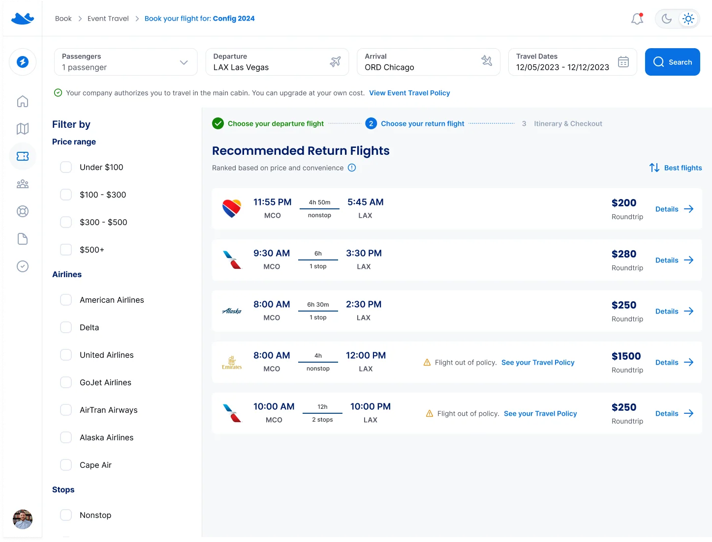
A rapid heuristic and benchmark-driven redesign; the original case explicitly notes that no in-depth user research was conducted.
📌 Project Overview
This project is a redesign of key pages from AllFly, a flight booking platform. The main focus was to improve the UI of the flight selection and checkout flows, aiming for a cleaner and more intuitive experience.
🎯 Context & Approach
Due to a short timeline, a quick benchmarking research was conducted to gather visual and interaction references from similar platforms. The redesign was guided by design heuristics and industry best practices, prioritizing usability improvements and visual consistency.
While this project didn’t involve in-depth user research, the choices made were aligned with patterns observed in established booking platforms to ensure familiarity and reduce cognitive load for users.
✏️ Deliverables
- Flight Selection Page Redesign
- Checkout Page Redesign
- Clean, modern UI with improved hierarchy and clarity
- Visual and interaction consistency across both flows
🖥️ Original Previous Interface
Below are the screens of the current AllFly platform interface, which presented usability and visual design challenges. While functional, the interface had several friction points that negatively impacted the user experience.
The main issues observed included information hierarchy, clarity in interactions, and visual consistency. These points will be highlighted next, along with the improvements made in the redesign.


Deliverables and feedback regarding the previous interface

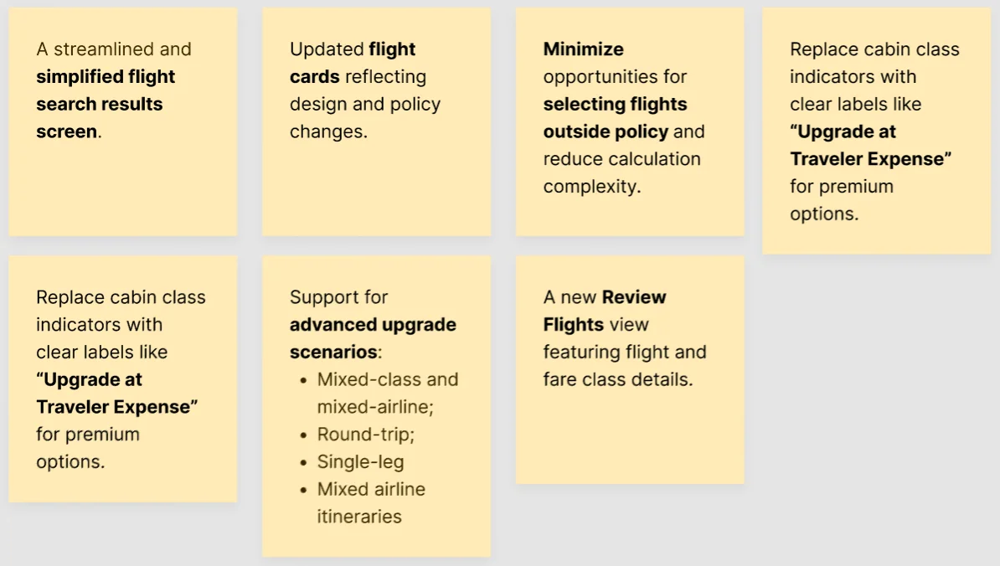
Quick research

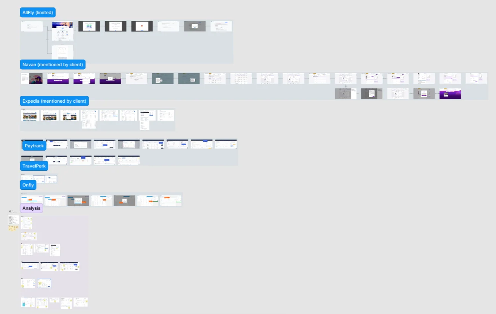
🖥️ Redesigned interface
Flights list with an open filter

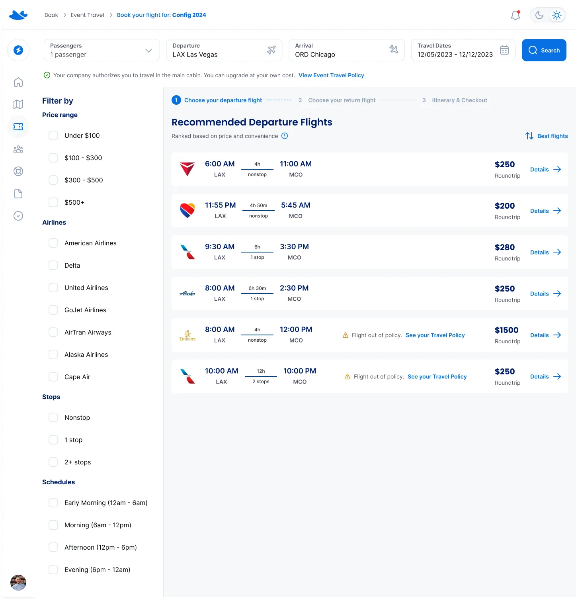
Flight details modal

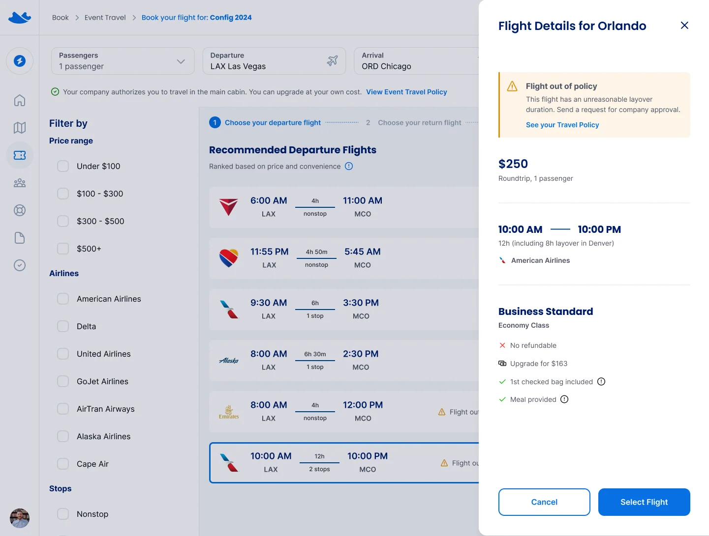
Itinerary & Checkout - Flight Class Selection

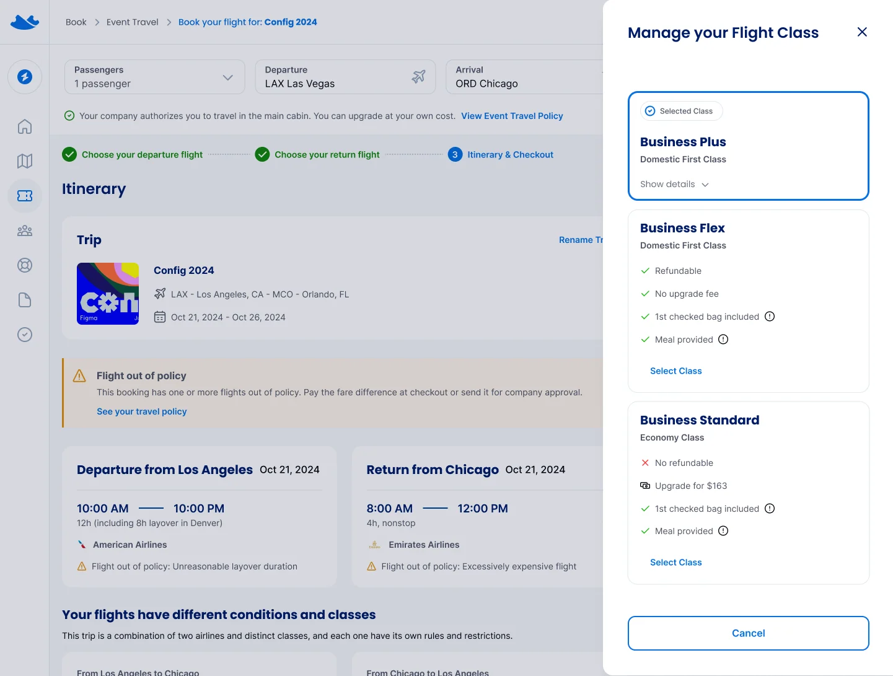
Itinerary & Checkout - Flight Class Selection - Class Details Open

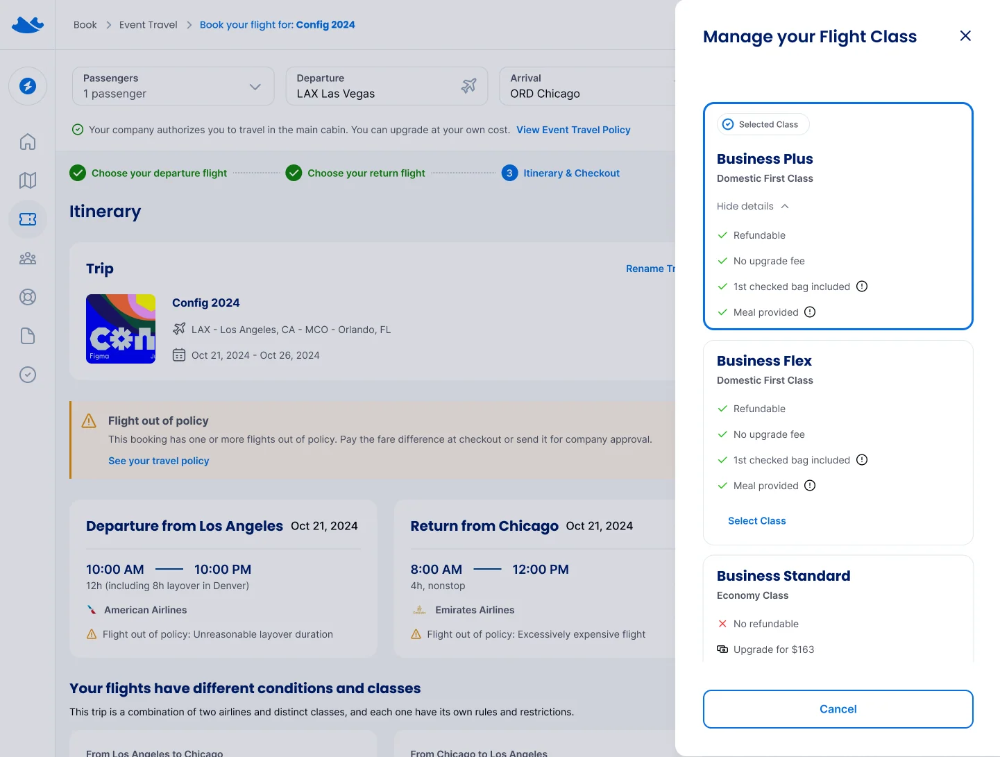
Justification for design choices
Design decisions were driven by user research insights and best practices in usability. Below, I detail the reasoning behind each choice and how they address user needs and business goals.

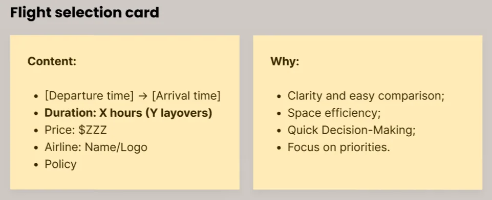

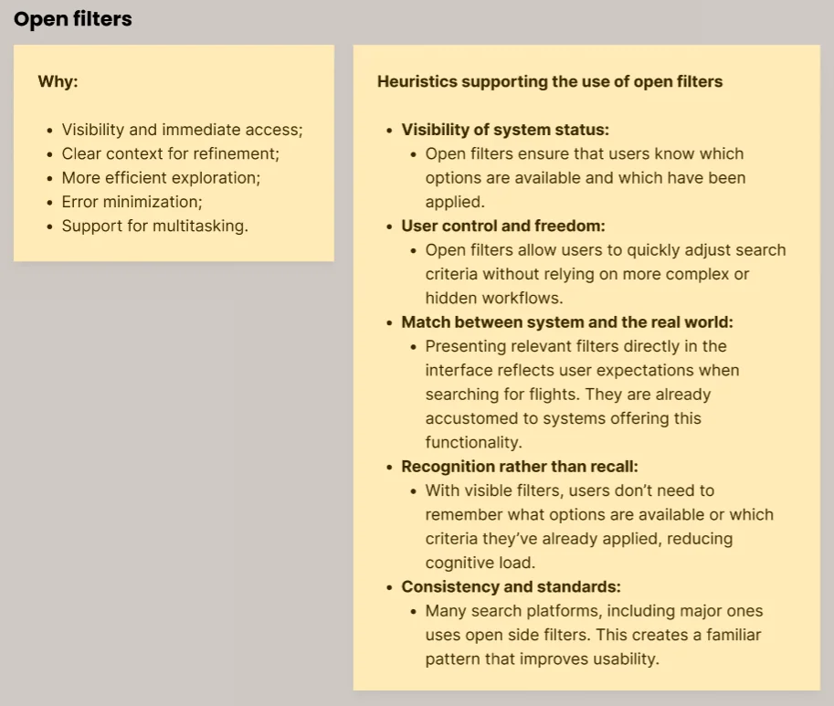

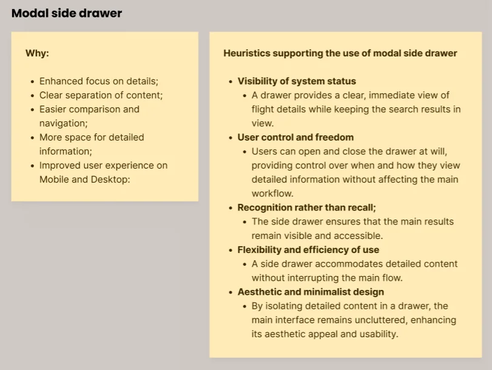

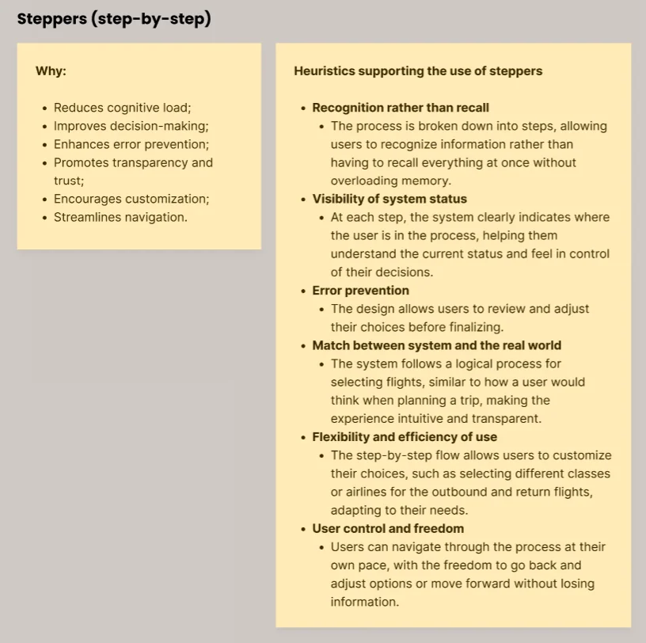
💭 Conclusion
The redesign of the AllFly flight selection and checkout pages aimed to enhance the user experience by addressing key usability issues. The changes made in the new interface directly address the pain points identified in the original design, resulting in a more intuitive and visually cohesive experience for users. By applying UX principles to inform these decisions, we were able to create a more streamlined, user-friendly process, ultimately contributing to a smoother journey for customers booking their flights.